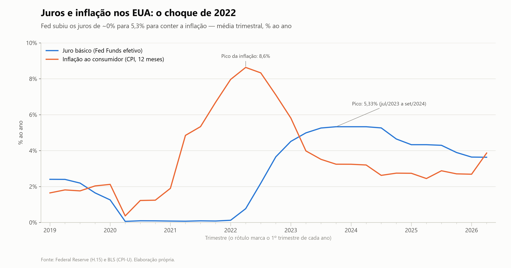
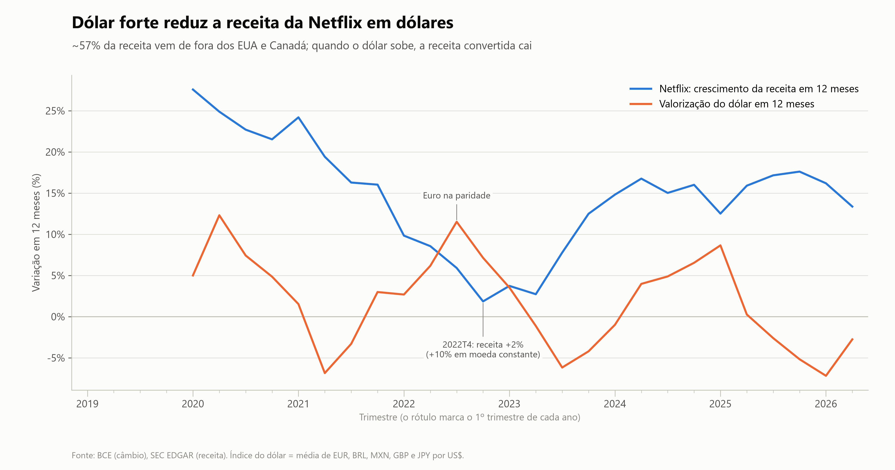
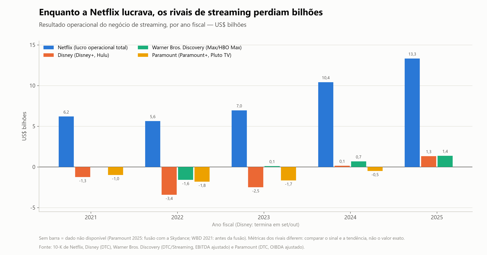

ECO057 · Análise das demonstrações financeiras · Netflix, Inc. (NFLX)
Este documento explica a análise macroeconômica e setorial que abre a apresentação. Ele mostra o que mudou na economia americana, no câmbio e no mercado de streaming entre 2019 e 2026, e por quais canais cada mudança aparece nas demonstrações da Netflix.
Por que começar pelo contexto
Uma variação de 2% na receita pode ser fraqueza do negócio ou só o dólar forte. Um caixa recorde pode ser eficiência ou só produções paradas por uma greve. Sem separar o que veio de fora (juros, inflação, câmbio, concorrência, choques do setor) do que é decisão da empresa, a análise horizontal mistura causas diferentes no mesmo número.
Por isso o trabalho faz a leitura em três camadas: o ambiente macro dos EUA, o câmbio das regiões onde a Netflix vende e a situação dos concorrentes de streaming. Cada afirmação deste documento foi conferida por um segundo levantamento independente, refazendo o cálculo nos arquivos oficiais ou relendo o trecho do relatório. Afirmações que não se sustentaram foram corrigidas ou retiradas.
Quadro-síntese
| Ano | Contexto dominante | Receita (AH) | Margem operacional | Caixa operacional |
|---|---|---|---|---|
| 2019 | Juros em queda; Netflix ainda queima caixa para montar o catálogo | — | 12,9% | −2,9 bi |
| 2020 | Pandemia: juro zero, confinamento, filmagens paradas | +24,0% | 18,3% | 2,4 bi |
| 2021 | Reabertura e retomada das produções | +18,8% | 20,9% | 0,4 bi |
| 2022 | Inflação no pico, alta de juros, dólar forte, perda de assinantes | +6,5% | 17,8% | 2,0 bi |
| 2023 | Greves em Hollywood; reajustes de preço contidos | +6,7% | 20,6% | 7,3 bi |
| 2024 | Compartilhamento pago, plano com anúncios, reajustes | +15,6% | 26,7% | 7,4 bi |
| 2025 | Desinflação, cortes de juros, dólar recua; imposto no Brasil | +15,9% | 29,5% | 10,1 bi |
1 · Macroeconomia dos EUA
Fed Funds: Federal Reserve, série H.15 diária · Treasury: Daily Par Yield Curve · CPI-U e desemprego: BLS (CUUR0000SA0, LNS14000000). Outubro de 2025 não tem dado: o BLS não coletou o mês por causa da paralisação do governo, e a média do 4º tri/2025 usa só novembro e dezembro.

Despesa de juros · DRE
Não reagiu à alta. A despesa trimestral foi de US$ 192,7 mi em média com juro zero (2020T2–2021T4) e de US$ 173,0 mi com juro máximo (2023T3–2024T2). Toda a dívida é de notas com cupom fixo; a taxa implícita ficou entre 4,8% e 5,3% em todo o período.
Receita financeira · DRE
Ganhou com a alta. A receita de juros sobre caixa e aplicações passou de US$ 60 mi (2022) para US$ 281 mi (2023), por taxas maiores e saldos maiores, e ficou em US$ 294–295 mi em 2024–2025.
Consumidor · receita
Pesou em 2022. A empresa citou crescimento fraco, inflação e a guerra entre os fatores que "provavelmente" afetavam o crescimento. Os únicos trimestres com perda de assinantes da série (2022T1 e T2) coincidem com o pico da inflação.
Custos · margem
Custo quase fixo. A amortização de conteúdo cresceu 10,1% ao ano entre 2019 e 2025, contra 14,4% da receita. Caiu de 45,7% para 36,4% da receita e a margem bruta subiu de 38,3% para 48,5%.
O primeiro canal é o mais didático para a apresentação. O Fed subiu os juros em mais de 5 pontos e a despesa de juros da Netflix ficou parada: a correlação entre as duas séries em 30 trimestres é de −0,11. O peso dos juros caiu de 3,11% da receita em 2019 para 1,72% em 2025, e a cobertura (EBIT sobre juros) subiu de 4,2 para 17,2 vezes.
"As of December 31, 2022, we had $14.4 billion of debt, consisting of fixed rate unsecured debt in fourteen tranches due between 2024 and 2030."
Netflix 10-K 2022 · accession 0001065280-23-000035
Os dois saltos da despesa de juros (US$ 234 mi em 2025T4 e US$ 262 mi em 2026T1) vieram da amortização de custos dos financiamentos contratados para a tentativa de compra da Warner Bros. Discovery: cerca de US$ 60 mi em 2025 e cerca de US$ 85 mi no 1º tri/2026, quando esses financiamentos foram encerrados. Em 2026T2 a despesa voltou a US$ 176 mi.
Preço foi a resposta da empresa ao ambiente. Entre meados de 2022 e o fim de 2023 os reajustes foram limitados ("limited price increases over the past 18 months", carta do 3º tri/2023), com reduções em alguns países. Nesse intervalo a Netflix lançou o plano mais barato com anúncios e o compartilhamento pago. Os reajustes voltaram nos EUA, Reino Unido e França no 4º tri/2023 e seguiram em 2025–2026; as cartas de 2025 e 2026 citam "higher pricing" entre os motores da receita.
A dívida bruta ficou praticamente igual de 2022 a 2026 (US$ 14,4 bi em 2022T4 e 14,3 bi em 2026T2). As recompras de ações, retomadas em 2023, somaram US$ 27,4 bi entre 2023T1 e 2026T2, cobertas pelo caixa operacional do período (US$ 31,8 bi). Houve uma emissão de US$ 1,8 bi em notas em 2024, compensada por vencimentos.
2 · Câmbio
A receita gerada fora de EUA e Canadá passou de 50,1% do total em 2019T1 para 56,8% em 2026T2. A EMEA subiu de 27,3% para 32,1% e a Ásia-Pacífico de 7,1% para 12,0%; EUA e Canadá caíram de 49,9% para 43,2%. Pelo 10-K de 2025, moedas diferentes do dólar responderam por 56% da receita e 31% das despesas operacionais, principalmente euro, libra, real, peso mexicano, dólar canadense e peso argentino.
Taxas de referência mensais do Banco Central Europeu, convertidas para moeda por US$. O índice tem pesos iguais; não usa a composição real da receita da Netflix por moeda.

A Netflix divulga, a cada trimestre, quanto a receita teria crescido com o câmbio do ano anterior ("F/X neutral", medida não-GAAP). A diferença entre os dois números é o efeito cambial. A tabela mostra os 18 trimestres em que a carta aos acionistas traz o número.
| Trimestre | Reportado | Moeda constante | Efeito do câmbio | Laranja = câmbio tirou · azul = câmbio somou |
|---|---|---|---|---|
| 1T22 | 10% | 14% | −4 p.p. | |
| 2T22 | 9% | 13% | −4 p.p. | |
| 3T22 | 6% | 13% | −7 p.p. | |
| 4T22 | 2% | 10% | −8 p.p. | |
| 1T23 | 4% | 8% | −4 p.p. | |
| 2T23 | 3% | 6% | −3 p.p. | |
| 3T23 | 8% | 8% | 0 | |
| 4T23 | 12% | 13% | −1 p.p. | |
| 1T24 | 15% | 18% | −3 p.p. | |
| 2T24 | 17% | 22% | −5 p.p. | |
| 3T24 | 15% | 21% | −6 p.p. | |
| 4T24 | 16% | 19% | −3 p.p. | |
| 1T25 | 13% | 16% | −3 p.p. | |
| 2T25 | 16% | 17% | −1 p.p. | |
| 3T25 | 17% | 17% | 0 | |
| 4T25 | 18% | 17% | +1 p.p. | |
| 1T26 | 16% | 14% | +2 p.p. | |
| 2T26 | 13% | 12% | +1 p.p. |
2022 é o caso central. No 4º tri/2022 a receita cresceu 2% em dólares e 10% em moeda constante. Na EMEA, a receita em dólares caiu 6,9% entre 2021T4 e 2022T4 (de US$ 2.523 mi para 2.350 mi) enquanto os assinantes da região subiram 3,6%. A receita média por assinante da EMEA caiu 10% em dólares e subiu 5% em moeda constante: o câmbio sozinho tirou cerca de 15 pontos.
"The sequential decline in revenue was entirely due to F/X."
Carta aos acionistas, 3º tri/2022 · accession 0001065280-22-000367
2024 tem uma armadilha. A diferença de 5–6 p.p. no 2º e no 3º tri/2024 não foi dólar forte em geral. A Netflix explicou que ela vinha principalmente da Argentina: reajustes grandes em pesos, por causa da inflação local, com o peso perdendo 75% frente ao dólar, o que infla o número em moeda constante. Na América Latina, a receita cresceu 9% em dólares e 46% em moeda constante no 3º tri/2024.
De 2025 em diante o câmbio virou a favor. O índice do dólar recuou de 121,7 (janeiro/2025) para cerca de 110, e desde o 4º tri/2025 o crescimento reportado supera o de moeda constante. A empresa reconheceu isso na projeção do 2º tri/2025, quando elevou a receita esperada de 2025 de US$ 43,5–44,5 bi para US$ 44,8–45,2 bi, "primarily" pelo enfraquecimento do dólar.
Em 2020–2021 as cartas só informavam o impacto cambial em dólares. Com ele, estima-se que o câmbio tirou cerca de 6 p.p. do crescimento no 2º tri/2020 e somou cerca de 4,5 p.p. no 2º tri/2021. Para 2020 a carta dá um exemplo concreto: o plano padrão de R$ 33 no Brasil valia US$ 8,5 em 2019 e US$ 6,5 às taxas de abril de 2020.
No fim de 2022 a Netflix tinha € 5,17 bi em notas em euro (cerca de US$ 5,5 bi, aproximadamente 38% da dívida). A cada balanço essa dívida é convertida para dólar, e a diferença vai para o resultado como ganho ou perda não-caixa. Isso explica dois saltos do lucro líquido que não têm relação com a operação: ganho de US$ 348 mi no 3º tri/2022 (euro abaixo da paridade) e perda de US$ 462 mi no 4º tri/2022 (euro em recuperação). No ano, foram −US$ 533 mi em 2020, +431 mi em 2021 e +353 mi em 2022.
Até o 2º tri/2023 a empresa declarava não usar derivativos para proteger o câmbio. O primeiro registro de hedge aparece no 10-Q do 3º tri/2023: contratos a termo sobre receitas previstas em moeda estrangeira e sobre compromissos de conteúdo. O nocional dos hedges de fluxo de caixa foi de US$ 8,8 bi (fim de 2023) para US$ 21,1 bi (fim de 2025). Depois disso a volatilidade caiu: desde o 3º tri/2025 a remensuração trimestral da dívida em euro ficou abaixo de US$ 11 mi.
10-K 2022 (0001065280-23-000035), notas de dívida e MD&A · 10-Q 30/09/2023 (0001065280-23-000273) · 10-K 2025 (0001065280-26-000034), Nota 8
3 · Setor
A Netflix ainda é menor que os conglomerados de mídia: em 2025 sua receita equivalia a 47,9% da receita da Disney e a 36,5% da Comcast. Mas foi a que mais cresceu e passou de pior a melhor margem do grupo.
| Empresa | Receita 2025 | Crescimento a.a. 2019–25 | Margem op. 2019 | Margem op. 2025 | Observação |
|---|---|---|---|---|---|
| Netflix | 45,2 bi | 14,4% | 12,9% | 29,5% | Praticamente um só negócio |
| Disney | 94,4 bi | 5,2% | 15,9% | 14,3% | Margem em base comparável; ano fiscal termina em set/out |
| Comcast | 123,7 bi | 2,1% | 19,4% | 16,7% | Inclui banda larga, parques e NBCU |
| Warner Bros. Discovery | 37,3 bi | não orgânico | 27,0% | 2,0% | Fusão com a WarnerMedia em abr/2022 |
| Paramount Global | 29,2 bi* | 1,6%* | 15,4% | −18,0%* | *2024, último 10-K antes da fusão com a Skydance |
Cuidado com a Disney
A Disney destaca o "lucro operacional dos segmentos" (US$ 17,6 bi em 2025), que exclui despesas corporativas, reestruturação e a amortização da compra da Fox e da Hulu. A base comparável às demais é US$ 13,5 bi. Com ela, o lucro operacional da Netflix (US$ 13,3 bi) praticamente iguala o da Disney com menos da metade da receita.
Os prejuízos operacionais de WBD e Paramount vêm de lançamentos contábeis grandes. A WBD teve, em 2022, US$ 3,76 bi de reestruturação (com US$ 2,76 bi de baixas de conteúdo) e, em 2024, baixa de goodwill de US$ 9,1 bi nas redes de TV. A Paramount teve US$ 2,37 bi de baixas de programação em 2023 e, em 2024, US$ 6,13 bi de impairments, dos quais US$ 5,98 bi no goodwill de TV a cabo. O padrão comum é a TV linear perdendo valor.

| Negócio de streaming | Métrica divulgada | 2021 | 2022 | 2023 | 2024 | 2025 |
|---|---|---|---|---|---|---|
| Disney (Disney+, Hulu) | Resultado operacional do segmento | −1,25 | −3,42 | −2,50 | 0,14 | 1,33 |
| Paramount (Paramount+, Pluto TV) | OIBDA ajustado | −0,99 | −1,82 | −1,66 | −0,50 | n.d. |
| WBD (Max/HBO Max) | EBITDA ajustado | n.c. | −1,60 | 0,10 | 0,68 | 1,37 |
| Netflix | Lucro operacional (EBIT) | 6,19 | 5,63 | 6,95 | 10,42 | 13,33 |
As métricas não são iguais. OIBDA e EBITDA ajustados excluem depreciação e amortização e tendem a mostrar um resultado melhor que o operacional; a perda econômica de Paramount e WBD foi provavelmente maior que a da tabela. A comparação vale para o sinal e a tendência: os rivais só chegaram ao positivo a partir de 2023 (WBD) e 2024 (Disney), enquanto a Paramount ainda perdia em 2024.
"The market for entertainment video is intensely competitive and subject to rapid change."
Netflix 10-K 2025 · accession 0001065280-26-000034. A empresa disputa o tempo de lazer com TV linear, outros streamings, videogames, plataformas abertas e redes sociais.
A base de assinantes pagos da Netflix foi de 167,1 mi (2019T4) para 301,6 mi (2024T4), alta de 80,5%. No fim de 2024 a Netflix tinha mais que o dobro do Disney+ Core (122,7 mi; 158,6 mi com o Disney+ Hotstar), do streaming da WBD (116,9 mi) e do Paramount+ (77,5 mi). Em 2025, Disney+ e WBD chegaram a 131,6 mi cada, menos da metade dos mais de 325 mi que a Netflix anunciou na carta do 4º tri/2025. Segundo a Nielsen, citada pela Netflix, sua participação no tempo de TV nos EUA subiu de 7% (2021) para 9,0% (dezembro de 2025).
As definições de assinante e as datas de corte diferem entre as empresas. A participação da Nielsen vem das cartas da própria Netflix e cobre só a TV dos EUA.
Pandemia (2020). A Netflix ganhou 36,6 mi de assinantes em 2020 e só 18,2 mi em 2021; a empresa disse que a COVID antecipou crescimento de 2021 ("pulled forward"). Com as filmagens paradas, o pagamento de conteúdo caiu 15,4% em 2020 e ficou abaixo da amortização, e o caixa operacional passou de −US$ 2,9 bi para +US$ 2,4 bi. Com a retomada em 2021, o pagamento subiu 50,3% e o caixa operacional quase zerou. O caixa de 2020 foi efeito de calendário.
Greves de roteiristas e atores (2023). O pagamento de conteúdo caiu 25,4% em 2023 (de US$ 16,8 bi para 12,6 bi), único ano da série abaixo da amortização, e o caixa operacional foi de US$ 2,0 bi para 7,3 bi. A empresa estimou em cerca de US$ 1 bi o gasto adiado pelas greves. O efeito foi do setor: a WBD descreveu no 10-K de 2023 um "impacto material", positivo no caixa e negativo no resultado.
"For the full year 2023, net cash provided by operating activities was $7.3B vs. $2.0B in 2022 while FCF totaled $6.9B compared to $1.6B in 2022. This included approximately $1B in delayed spending due to the WGA and SAG-AFTRA strikes."
Carta aos acionistas, 4º tri/2023 · accession 0001065280-24-000029
Tributo no Brasil (2025). A queda da margem no 3º tri/2025 não veio de câmbio nem de juros: foi uma despesa de cerca de US$ 619 mi com autuações de tributos não incidentes sobre a renda no Brasil, referente a 2022–2025 e lançada de uma vez no custo. A margem operacional ficou em 28,2%, contra cerca de 33,6% sem o efeito e projeção de 31,5%.
4 · Leitura para a análise horizontal
Ressalvas
Método e fontes
Os dados da Netflix e dos concorrentes vêm dos relatórios arquivados na SEC (10-Q, 10-K e cartas trimestrais anexadas aos 8-K). A série macro vem do Federal Reserve (H.15), do Tesouro dos EUA (curva diária de juros), do BLS (CPI-U e desemprego) e do Banco Central Europeu (câmbio de referência mensal). As médias trimestrais são médias simples dos dias ou meses disponíveis.
Cada afirmação passou por duas etapas. Um primeiro levantamento calculou os números e localizou os trechos nos documentos. Um verificador independente refez cada cálculo e releu cada trecho, com a instrução de tentar refutá-lo. Das 74 afirmações levantadas, 44 foram confirmadas como estavam e 30 foram corrigidas (arredondamento, período ou causalidade afirmada sem prova); nenhuma precisou ser descartada. Um terceiro revisor apontou lacunas, preenchidas com novas afirmações conferidas nos documentos.
Todos os números estão na planilha Analise_Netflix_ECO057.xlsx (abas Macro, Setor, Regioes, AH_Anual e Variacoes_Bruscas). Os gráficos estão em graficos_slides/. O roteiro da apresentação está em ROTEIRO_APRESENTACAO.md.